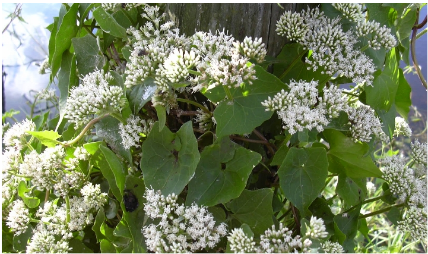
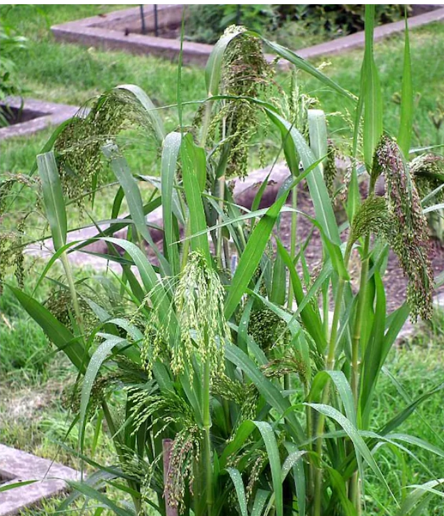

LIST OF PLANTS FROM SELECTED AREA
1.Mikania scandens(CLIMPING HEMPWEED)
FAMILY:Asteraceae

Mikania scandensi>, or climbing hempweed, is a herbaceous vine native to Eastern North America that is often confused with the invasive Mikania micrantha. While M. scandens can act as a local weed in its native range, it is not considered broadly invasive there and is even endangered in some parts of its native range. Its invasive reputation in places like Hawaii and Southeast Asia is likely due to misidentification with the highly invasive M. micrantha, which is known for its serious environmental and economic impacts
2.Panicum
FAMILY:GRASS FAMILY

Different species of panic grass (genus Panicum) have different behaviors; some are native and benign, while others, like torpedo grass (Panicum repens), are aggressively invasive. The invasive species are known for their ability to form dense, sprawling colonies that displace native vegetation, particularly in moist habitats.
3.Ipomoea carnea(MORNING GLORY)
FAMILY:CONVOLVULACEAE

Ipomoea carnea (commonly known as the bush morning glory or pink morning glory) is a semi-woody perennial shrub native to tropical America that has become a widespread and aggressive invasive species across parts of Africa, Asia, and North America. Growing 1 to 3 meters tall (or sprawling like a vine up to 6 meters), it features heart-shaped leaves, milky sap, and clusters of trumpet-shaped, pink to lilac-rose flowers. The plant thrives in diverse environments ranging from dry soils to aquatic and wetland habitats, spreading rapidly through seeds and stem fragments. It poses serious ecological and agricultural threats by choking out native vegetation, reducing local biodiversity, and producing toxic compounds like swainsonine that poison livestock.